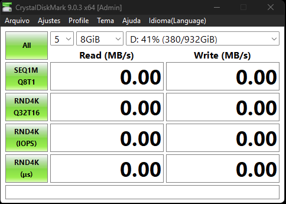

#
crystaldiskmark
|
Teste de leitura e escrita do SSD NVMe para medir a velocidade e a temperatura.
CRYSTALDISKMARK

1. Instruções
- Aplicativo (DiskMark64) Executar como Administrador
2. Configuração
- Ajustes NVMe SSD
- Profile Peak Performance
- Parâmetros 5 → 8GiB → C: → ALL
3. Resultado esperado
- Temperatura O SSD deve se manter abaixo de 80°C durante todo o teste (meu critério)
- Estabilidade A velocidade de leitura e escrita deve se manter próxima do valor de fábrica do SSD, sem queda por superaquecimento (thermal throttling)
O que faz: Executa testes de leitura e escrita sequencial e aleatória com blocos grandes de dados, para medir a velocidade real do armazenamento. É um teste curto (poucos minutos): serve para ver a velocidade e acompanhar a temperatura. Para avaliar melhor o dissipador, repita o teste várias vezes seguidas e observe a temperatura.